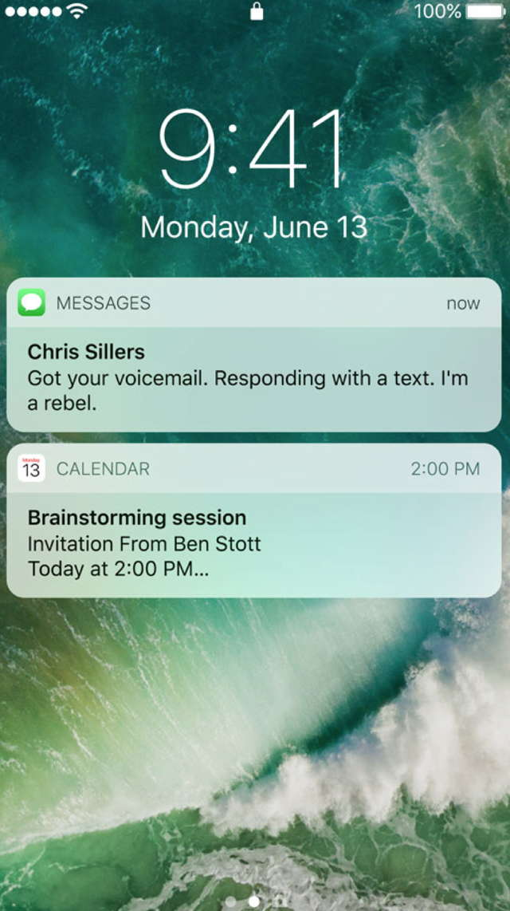

About Us


We at Gaize are committed to help our users in variety of fields using eye tracking techniques. By using various machine learning algorithms we came up with a solution to increase the efficiency of our users in daily activities. Our software can also be used in several other fields such as online examination, conducting research etc.
Currently, our website showcases the use of our software by giving the users points based on the efficiency of their driving. Firstly, the user needs to train the software by visiting the Train tab and following the instructions there. They can then check their driving efficiency in the Implementation tab.